Fra en plet på fjerde sal til zinken på en københavnsk kvist
Det begyndte med en plet, der voksede. Vandet havde fundet en vej fra taget, som ingen kunne se inde fra lejligheden ovenover. Følg undersøgelsen fra beboerens loft til kvisten og tilbage til familien, som skulle have sit hjem igen.
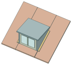
En plet på fjerde sal
Man kan stå midt i sit køkken og være helt sikker på én ting om loftet: I går så det anderledes ud. På Vesterbro i København var det en forandring af den slags, der satte en lang undersøgelse i gang. I en lejlighed på fjerde sal voksede fugtpletterne. Beboeren Jeppe Eb lagde blandt andet mærke til dem på toilettet. Da bygningsejeren anmeldte skaden i 2012, havde ingen endnu givet vandet en adresse oppe på taget.
Prøv at sætte en blyantspids på pletten i bogens snit. Før spidsen lodret op. Først rammer du etagedækket og dernæst lejligheden ovenover. Så let er det at få en mistanke til at ligne en forklaring. Men den streg har du selv tegnet. Pletten fortæller kun, at fugten er nået så langt, at loftets underside bærer et synligt mærke.
Lad blyanten blive dér et øjeblik. I resten af bogen skal vi følge det arbejde, der skulle til, før det blev rimeligt at sætte det næste punkt.
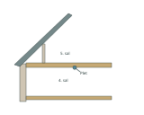
Principsnit gennem de to øverste boligniveauer. Det blå punkt udpeger loftets underside. Plettens placering på snittet er valgt til forklaringen.
Læg to ens tegninger af et loft ved siden af hinanden. På den første er mærket lille. På den anden er kanten rykket ud. Det virker beskedent, men her har du en oplysning, som selv et skarpt billede af den største plet mangler: Du kan se, at der er sket noget mellem to iagttagelser.
På Vesterbro var netop udviklingen vigtig. Pletterne blev større. Familien henvendte sig først til sit forsikringsselskab og tog siden kontakt til Byggeskadefonden vedrørende Bygningsfornyelse, BvB, som den kendte fra en tidligere sag. Da fonden kom på sit første besøg lige før jul, stod den over for en skade i bevægelse.
Du kan selv prøve metoden på en tegning. Giv hvert billede en dato og tag både hjørnet af rummet og mærket med. Kan en anden finde nøjagtig det samme sted igen? På de to tavlefelter er loftets udsnit det samme. De to blå felter illustrerer vækst. De er tegnet uden mål fra lejligheden.
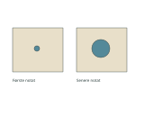
Samme udsnit vist to gange. Formen og størrelsen er tegnede eksempler. Beboeren beskriver væksten i interviewet.
Begynd i rummet ovenpå. En våd plet under et køkken kunne få nogen til at se efter en installation. Ligger stedet tæt ved tagfoden, vil andre måske se ud mod taget. På tegningen kan begge forslag ende ved præcis den samme blå prik. Hvis man kun har et billede af loftet, er det svært at vælge mellem dem.
På første besøg i Vesterbro-ejendommen kunne folkene fra BvB heller ikke afgøre årsagen med det samme. Det er værd at standse op ved den del af historien. De havde været inde og se skaden. Beboeren havde fortalt, hvordan den havde udviklet sig. Alligevel måtte de komme igen og se huset fra en anden side.
Tavlens stiplede streger er vores to spørgsmål til et hus som dette. Det ene kunne undersøges inde i bygningen, det andet fra tagets yderside. I beretningen er det undersøgelsen af taget, der siden bringer sagen videre. Her er der ingen oplysning om en utæt installation.
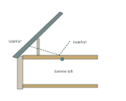
De to stiplede linjer viser tænkte undersøgelsesretninger fra samme plet. De gengiver ingen målt strømningsvej.
Der var en god grund til, at beboerne kendte fonden. Ejendommen var blevet byfornyet i 1997, og i 2009 havde der været problemer med vand ved de inddækkede altaner. Her kunne man pege på to steder næsten ved siden af hinanden og alligevel fortælle to forskellige historier.
Ved vinduerne var gummilister blevet forsømt. Flere havde hængt løst i længere tid. Bag tagrenden fandt fonden også en vej ned i konstruktionen. Den knyttede denne skade til materialer valgt ved byfornyelsen, som var uegnede til løsningen. BvB afviste at dække tætningen ved vinduerne, men anerkendte skaden bag tagrenden og sørgede for udbedringen. På tavlen kan du pege først på den korte liste langs vinduet og derefter ind bag rendens bagkant. Så lille kan afstanden mellem to forskellige undersøgelser være.
Når en ny plet viser sig tre år senere, ligger det lige for at genåbne den gamle forklaring. Historikken gav et sted at begynde. Fundene ved de inddækkede altaner kunne dog ikke fortælle, hvad der nu foregik oppe ved kvistene.
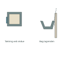
To adskilte, skematiske udsnit af altansagens detaljer. Beretningen beskriver forholdene uden at angive de konkrete profilformer.
Fra fortovet tegner en kvist sig som en lille bygning oven på huset. Den har sit eget tag, sine sider og et ansigt med et vindue. Men der er langt fra at kunne tælle kviste på en facade til at kunne se, hvad der sker i den smalle samling mellem to stykker zink.
Efter jul kom der en lift til ejendommen. Jeppe Eb fortæller, at det først var ved dette nye besøg, familien fik forklaringen oppe fra taget. BvB beskriver undersøgelsen som et forløb med flere besigtigelser. Her ændrede adgangen til huset, hvad man overhovedet kunne få viden om.
Prøv samme skift i tegningen. I det store snit kan du holde styr på, hvilken etage en plet hører til. Ringen på tagfladen viser, hvor undersøgeren nu skal tæt på. Næste tegning skiller de to fund ad.
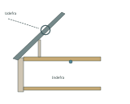
Ringen angiver det nye blik på tagets yderside. Linjen viser en synsretning. Liftens præcise placering er ikke oplyst.
Læg et ark papir på bordet, og tegn en uregelmæssig cirkel inde på fladen. Læg så et ark hen over kanten af et andet. Lad blyanten følge kanten, og løft den et øjeblik midtvejs. Den afbrudte streg kan stå for en brudt lodning. Cirklen ligger i selve fladen. Afbrydelsen sidder dér, hvor de to stykker skulle holde sammen.
Det var en vigtig forskel på Vesterbro. Ved undersøgelsen fandt BvB både gennemtæret zinktag og brud i flere lodninger omkring kvistene. Ved lodning binder et andet metal, loddet, de to zinkstykker sammen. En inddækning forbinder bygningsdele, så regnen kan passere hen over overgangen. Her var der åbninger både i metallet og ved sammenføjningerne.
Læg en finger over hullet i venstre felt på tavlen. I højre felt er der stadig en åben samling. Nu kan du se, hvorfor fundet af den første fejl ikke var nok til at afslutte undersøgelsen af kvistene.
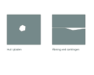
Til venstre viser hullet en gennemtæring. Til højre markerer afbrydelsen i det okkerfarvede bånd et brud i lodningen. Overlægget er et tegnet eksempel. BvB oplyser ikke samlingens profil.
Sæt dig i tankerne oven over taget og se lige ned. Midt i den store tagflade stikker en kvist frem. Når regnen falder på kvisten, skal dens eget lille tag af med vandet. Men over kvisten ligger også en del af husets større tag. Vand herfra kan møde en forhindring på vej ned.
Følg de tre små pile på tegningen. De yderste har frit tag foran sig. Den midterste peger ind mod kvisten. Før nu fingeren hen til en af de smalle strimler langs siden. Her møder tagfladen kvistens sidevæg, som kaldes flunken. Det møde er værd at få med på en detailtegning, for to tagflader alene fortæller ikke, hvor vandet fortsætter hen rundt om hjørnet.
Byggeskadefonden beskriver denne ekstra vandbelastning i sin erfaringsartikel om kviste. På Vesterbro blev der fundet svigt ved flere inddækninger. Hvilken enkelt samling der først slap en dråbe ind, fremgår ikke af sagen. Her viser tavlen, hvorfor der var mere end ét sted at se efter.
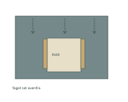
Kvist i tagplan med kvisttag i lyst felt og overgange langs siderne i okker. Pilene angiver hovedtagets faldretning.
Gå helt ud mod kanten af et værelse under et skråt tag. En lodret væg kan standse dig, længe før selve taget er nået ned i gulvhøjde. Bag væggen ligger et lavt rum. Det kaldes skunken. Står du inde i boligen og ser på væggens malede side, kan hele det lille trekantede rum være ude af syne.
I Vesterbro-sagen kom vandet ind i skunkrum på femte sal og fortsatte derfra ned i ejendommen. Fonden fortæller, at det skete uden synligt tegn i de øverste lejligheder på vandets vej. Et rum kan således ligge højere end en skadet bolig og være en del af forklaringen, selv om den, der bor deroppe, ikke kan pege på en tilsvarende plet.
Følg den blå trekant med øjet. På den ene side har du det skrå tag, på den anden side boligens indvendige væg. Først når du også tegner bunden under trekanten, får du øje på nærheden til næste etage.
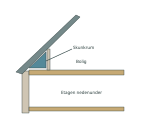
Skunken er vist som et blåt felt i et forenklet snit. Placeringen i forhold til boligen forklarer, hvorfor et skjult rum kan være vådt uden synlige mærker inde i boligen.
På en plantegning kan man let tælle rum. På en skadet bygning er det mindst lige så vigtigt at kunne tælle lag. For hvad ligger der under tre skunkrum på femte sal? Der ligger en etageadskillelse. For én beboer er den en del af gulvet. For en anden er det den konstruktion, hun ser undersiden af, når hun lægger hovedet tilbage.
BvB oplyser, at tre skunkrum og etagedækket mellem fjerde og femte sal blev saneret for råd og skimmel. Ord som »fugtplet« rækker pludselig meget kort. Pletten var en iagttagelse på en flade. Da der blev åbnet, omfattede arbejdet både de lave rum bag skunkvæggene og selve dækket. På begge etager blev der også sat lofter og vægge i stand.
Tavlen lægger de tre rum ud på række, så du kan tælle dem. Tag derefter en lineal og hold den langs båndet nedenunder. Nu er der kommet en dybde ind i historien. At få kvistens yderside tæt igen var én opgave. At tage hånd om følgeskaderne nede i huset var en anden.
Tre skunkrum og etagedækket. Antal rum og etager er oplyst af BvB. Rækkefølgen på tavlen og båndets længde er skematiske.
Et tag kan have to flader, der følger nogenlunde samme hældning. Den øverste ser du udefra. Længere inde ligger undertaget, som skal føre vand videre, hvis noget er kommet forbi den yderste dækning. Se på tegningen fra siden. De to streger hører til hver sit lag. Retter man en finger mod overfladen, har man endnu ikke sagt noget præcist om den anden.
På Vesterbro blev kvisttagene og inddækningerne udskiftet. Om undertaget bruger beretningen et mindre, men vigtigt ord: Det blev udskiftet partielt. Altså på en del af arealet. Hvor grænsen lå i meter, står der ikke. Det grønne mellemstykke på tavlen giver ordet en form uden at foregive, at vi kender den faktiske udstrækning.
For den, der skal bevare så meget af en bygning som muligt, har det lille ord en værdi. Spørg til hvert lag for sig. Hvilken del blev taget op? Hvilken del blev liggende? Først så giver det mening at tale om omfanget af en reparation.
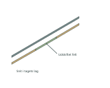
Undertaget er det nederste, farvedelte lag. Det grønne felt viser betydningen af delvis udskiftning. Snittet er et princip og gengiver ingen målt åbning.
På en tidsplan kunne man have skrevet »udbedring af lofter og vægge«. Prøv at læse de samme arbejder op som rum. Badeværelse. Køkken. Soveværelse. Først dér begynder det at blive tydeligt, hvad de ord betød for en familie, der også skulle have en hverdag til at fungere.
Jeppe Eb fortæller, at hans familie var den eneste, som måtte flytte midlertidigt. En del af sommeren holdt de ferie. Noget af tiden lejede de en bolig af venner. At arbejdet kunne lægges om sommeren, havde gjort forløbet lettere. Til gengæld oplevede han bagefter, at afslutningen var blevet for kort, og at blandt andet gipsarbejde og maling bar præg af tidspresset.
Se på de tre navngivne felter på tegningen, og vælg den dag, hvor du selv ville mene, at boligen var klar til at vende tilbage til. Hvad skal der fungere på den dato? Det er et andet spørgsmål end, hvornår der igen ligger tæt zink på kvisten. I denne familie lå et helt ophold andetsteds mellem de to ting.
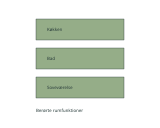
De tre felter viser, hvilke rum arbejdet berørte på fjerde og femte sal. Beretningen fordeler ikke de enkelte rum på etager.
Prøv at genfortælle sagen for en kollega med ét snit på bordet. Begynd dér, hvor historien begyndte for familien: et mærke på undersiden af loftet. Spring så helt op til taget. Her fandt man efter flere undersøgelser både gennemtæret zink og ødelagte lodninger. Nu mangler der noget mellem de to sætninger. Det er netop det, en tegning af skunkrummet og etagedækket kan give dig.
Gå denne gang fra toppen og ned. Vandet kunne trænge ind ved kvistene, nå de skjulte rum på femte sal og fortsætte længere ned i ejendommen. Det giver en forklaring på, at det synlige spor udviklede sig et andet sted end åbningen. Vi kender de berørte bygningsdele. Mellem dem har vi tegnet stiplede forbindelser, for ingen af tegningerne i denne bog har fulgt en enkelt dråbe på dens vej.
Da arbejdet blev afsluttet i 2013, havde både blikkenslagerens og malerens del af huset været i spil. Næste gang en beboer peger på sit loft, er det værd at begynde netop dér. Og at have plads på papiret til alt det, der ligger uden for rummet.
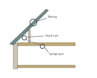
Tre ringe viser åbning, skjult rum og synligt spor. Forbindelserne samler sagens fund i ét principsnit.